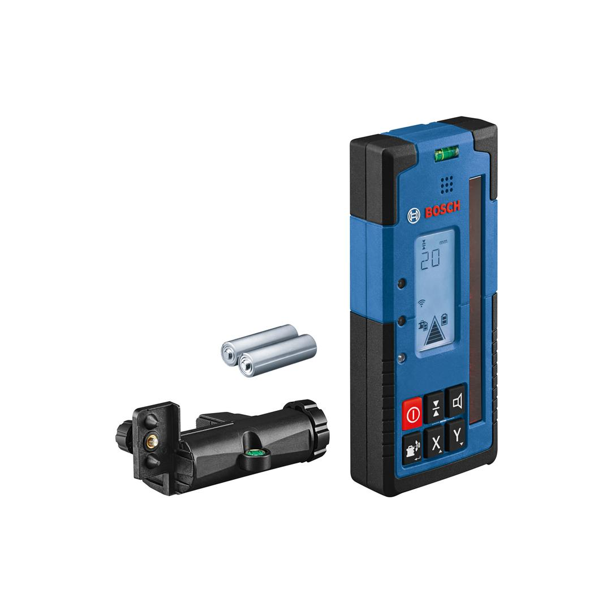
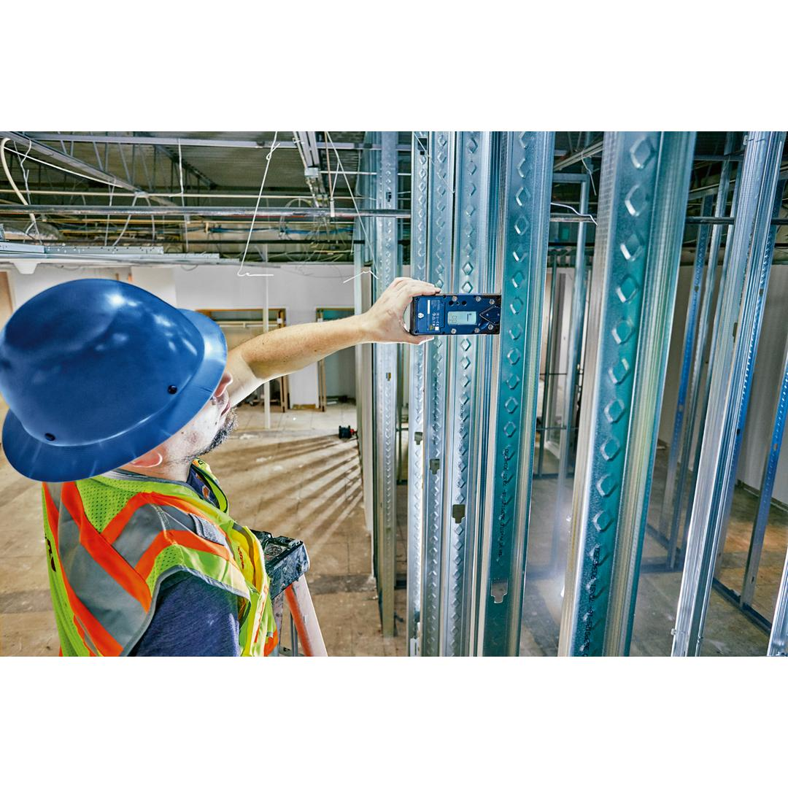
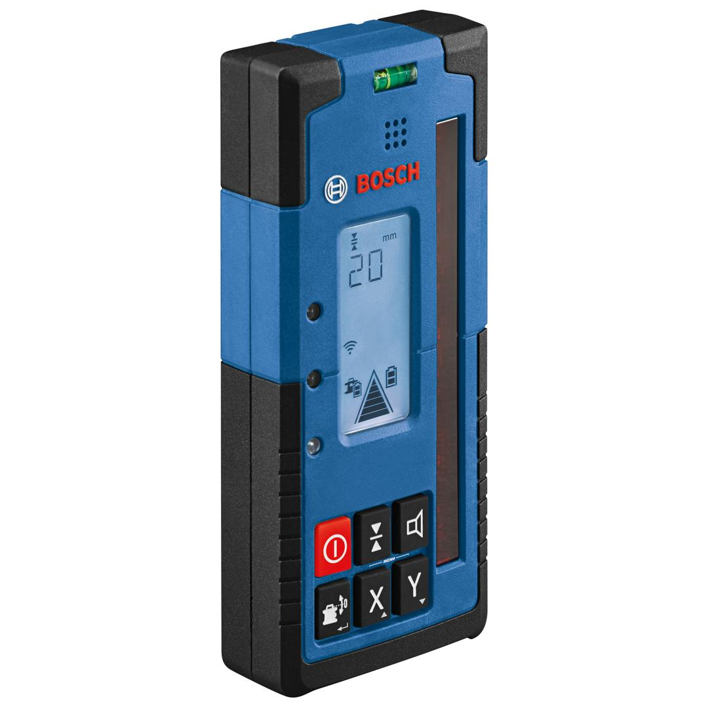
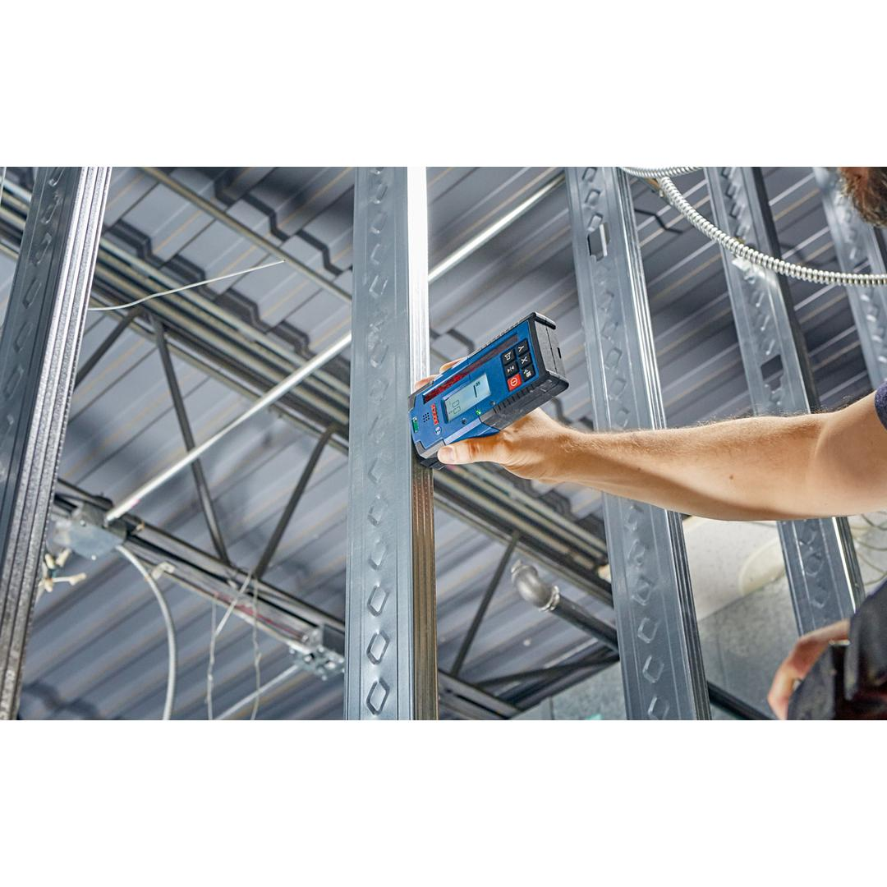
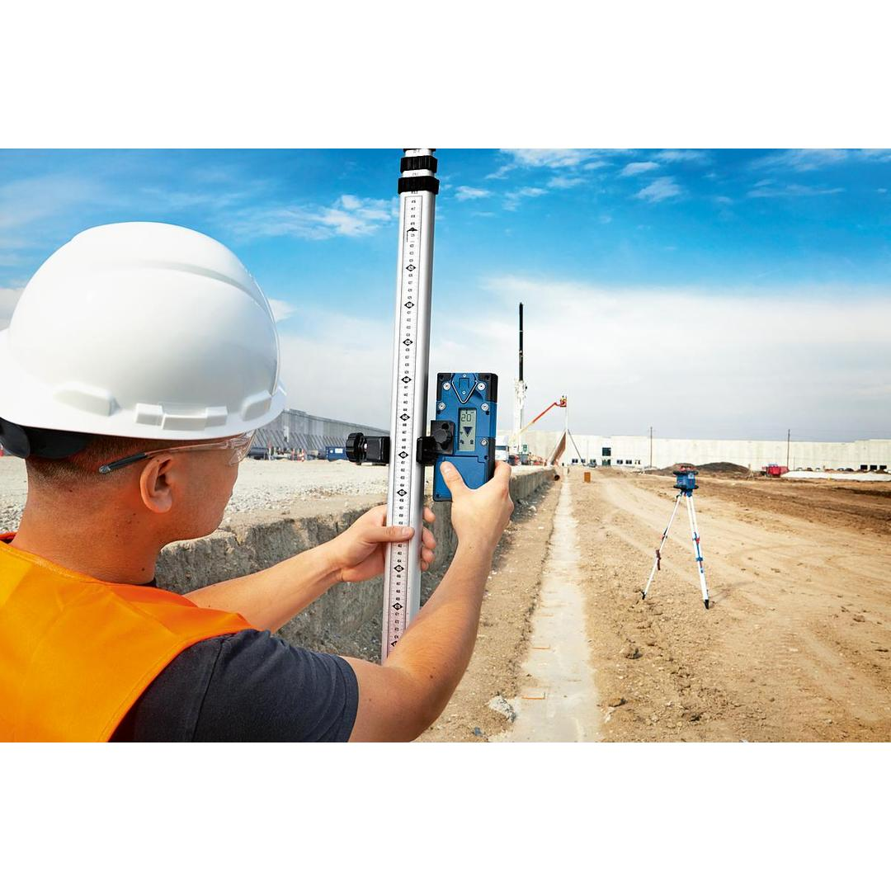
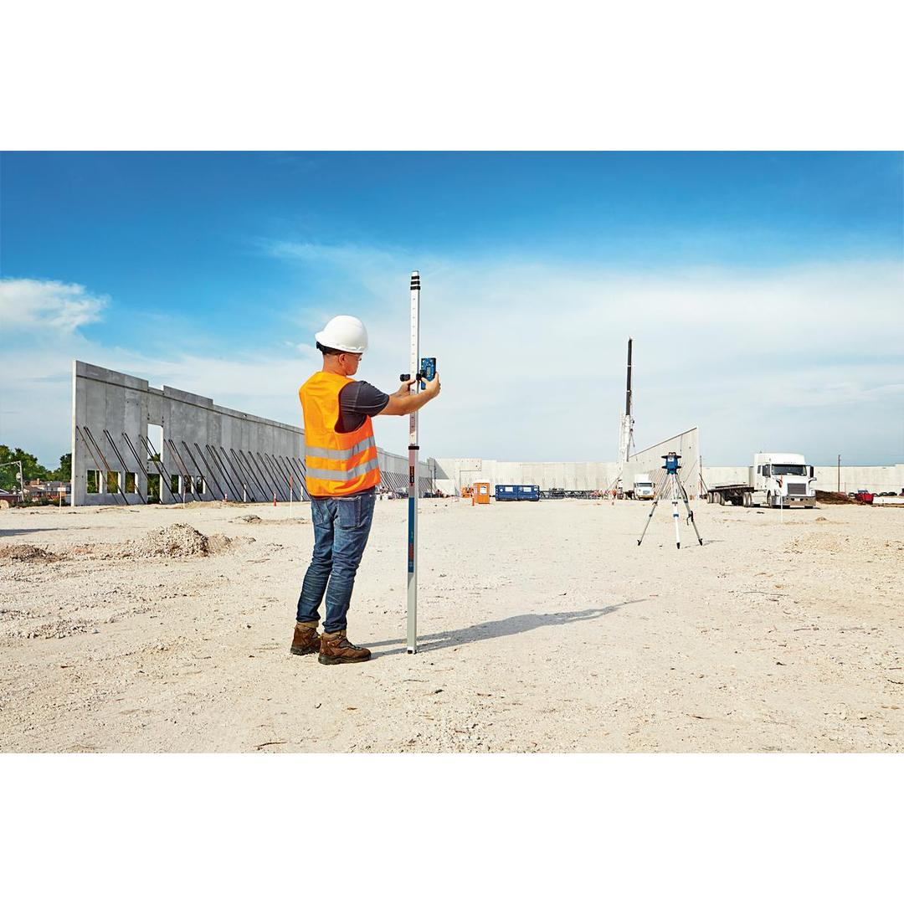
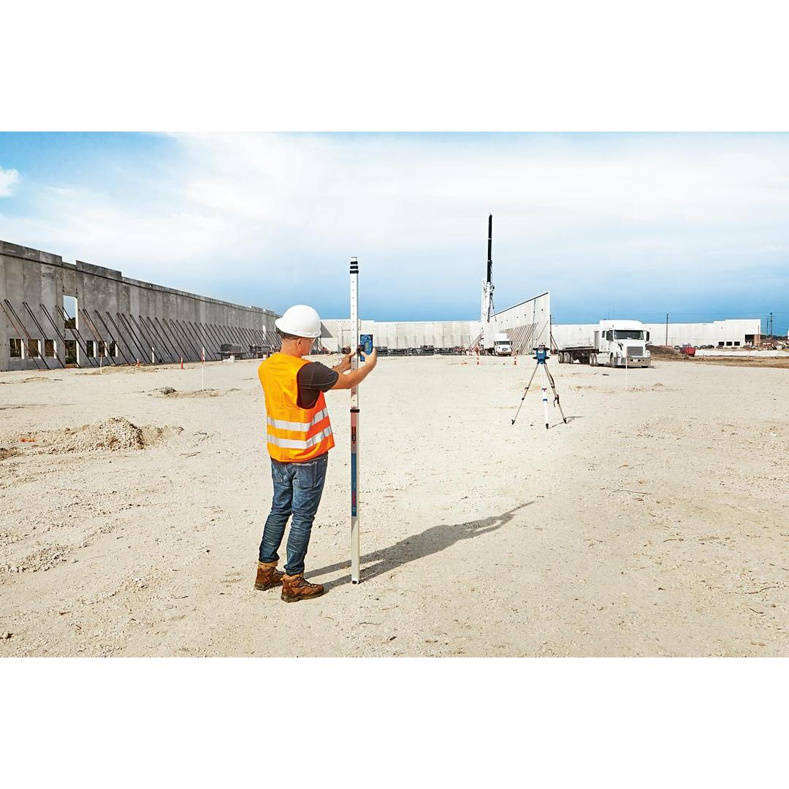
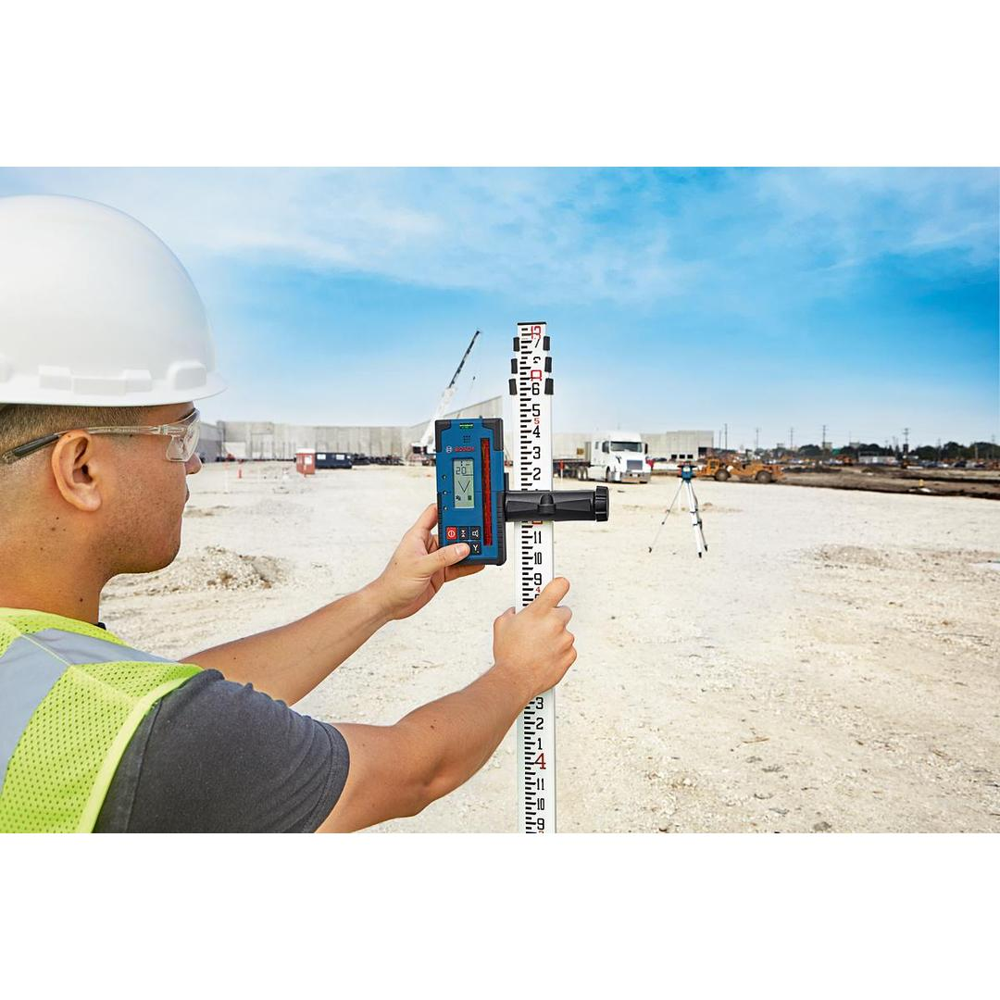

0601069P00











| Power supply |
2 x 1.5 V LR6 (AA) |
| Dust and splash protection |
IP67 |
| Weight, approx. |
0.380 kg |
| Tool dimensions (width) |
79 mm |
| Tool dimensions (length) |
175 mm |
| Tool dimensions (height) |
33 mm |
| Measuring accuracy (fine/rough) |
± 0.5 mm, ± 1.0 mm, ± 2.0 mm, ± 5.0 mm, ± 10.0 mm |
| Type of receiver |
Rotation lasers |
Laser detection made quick and easy – enjoy high-quality results with LR 60 Professional
Fast and easy laser detection – the robust, high-quality rotation laser receiver LR 60 Professional is the perfect mate when working with the GRL 600 CHV Professional. Its long 125-mm reception window and dual-sided backlit LCD display with a mm offset feature make it simple to detect lasers quickly and easily for efficient working progress. It is always ready for even the toughest jobsites thanks to its robust soft grip body, durable rubber keypad, and IP67 protection rating against dust and water. Communication with GRL 600 CHV enables additional functions including user calibration (uCAL) and Centre line mode for less errors and more reliable results.
Use this receiver with the GRL 600 CHV when determining cut-and-fill for excavation work, concrete forms, landscaping, and facade work.
The laser receiver LR 60 also features different sensitivity and volume settings, making it adaptable to fit each work environment. It has a large working range of up to 300 m. The receiver's LEDs with adjustable brightness settings help detect the laser beam while its vial ensures accurate results.